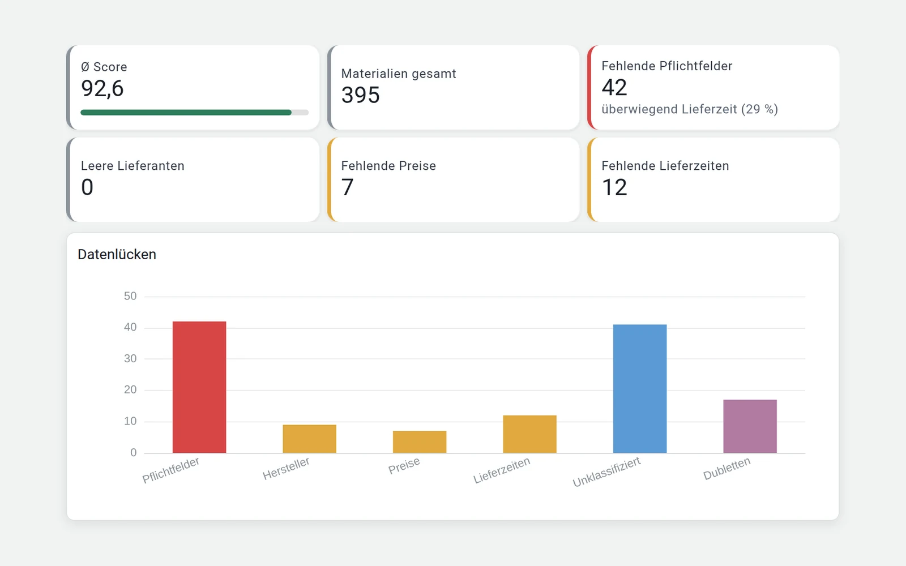

Aus der Praxis. Für die Praxis.
Smart.
Effizient.
Sicher.
Technische und digitale Lösungen für Handwerk und Industrie.
Wir analysieren Prozesse, Materialien, Ersatzteile und bestehende Systeme und entwickeln daraus praktikable Lösungen für Ihren Betrieb. Von der Analyse bis zur Umsetzung aus einer Hand.
- AnalysePotenziale erkennen
- UmsetzungLösungen realisieren
- MigrationBestehendes überführen
- AbsicherungRisiken reduzieren
Ausgangslage
Wo verliert Ihr Betrieb Zeit, Geld oder Sicherheit?
Unnötige Bestände, fehlende Ersatzteile, lange Lieferzeiten, manuelle Prozesse, schlechte Daten oder alte Software wirken oft getrennt. In der Praxis hängen sie zusammen.
Kapitalbindung
Material liegt jahrelang im Regal und bindet Geld, das an anderer Stelle fehlt.
Fehlende Ersatzteile
Ein kritisches Teil fehlt, die Anlage steht – und die Eilbeschaffung kostet mehr als das Teil.
Datenqualität
Dubletten, Lücken und uneinheitliche Bezeichnungen machen Planung zum Bauchgefühl.
Lieferantenabhängigkeit
Ein einziger Lieferant, lange Lieferzeiten, keine geprüfte Alternative.
Manuelle Prozesse
Papier, Excel und Doppelerfassung kosten Zeit und erzeugen Fehler.
Veraltete Software
Alte Anwendungen enthalten wertvolles Prozesswissen, sind aber kaum noch wartbar.
Risiken reduzieren. Kosten optimieren. Prozesse vereinfachen.
Klarer Prozess. Klare Verantwortung.
Vom Problem zur Lösung. Aus einer Hand.
Statt einzelne Maßnahmen isoliert zu betrachten, begleiten wir den gesamten Lösungsweg. Das reduziert Übergaben und schafft klare Verantwortung.
Analysieren
Daten, Prozesse, Systeme und Risiken verstehen.
Bewerten
Nutzen, Kritikalität und Machbarkeit vergleichen.
Optimieren
Zielprozess und Lösungsweg festlegen.
Umsetzen
Software, Daten, Beschaffung oder Technik realisieren.
Migrieren
Daten und Abläufe kontrolliert überführen.
Weiterentwickeln
Ergebnisse prüfen und Lösung anpassen.
Ein Partner. Fünf Leistungswelten.
Was wir für Sie lösen.
Analyse & Optimierung
Potenziale erkennen, Risiken bewerten, Maßnahmen priorisieren.
Material & Ersatzteile
Bestände optimieren, Versorgung sichern, Alternativen schaffen.
Instandhaltung
Anlagen, Aufgaben, Material und Rückmeldungen verbinden.
Digitalisierung & Software
Bestehendes modernisieren, Speziallösungen entwickeln, Daten migrieren.
3D-Technik
Bauteile scannen, rekonstruieren und Beschaffungswege prüfen.
Ihre Daten. Ihre Kontrolle.
KI nutzen. Daten behalten.
KI muss nicht bedeuten, dass sensible Betriebs-, Material- oder Dokumentendaten unnötig das Unternehmen verlassen. Je nach Anwendungsfall entwickeln wir Lösungen für lokale Verarbeitung, On-Premises-Betrieb oder kontrollierte Infrastruktur. Ziel ist größtmögliche Datenhoheit bei praktisch nutzbarer KI.
Lokale KI
KI-Modelle können bei geeigneter Hardware innerhalb Ihrer Umgebung betrieben werden – etwa für Dokumentenanalyse, interne Wissenssuche, Datenprüfung und technische Assistenz.
Offline-Betrieb
Ausgewählte Kernfunktionen der WK-Anwendungen sollen auch ohne permanente Internetverbindung nutzbar sein – je nach Produkt und Ausbaustufe vorgesehen.
Datenhoheit
Betriebsmodell passend zu Schutzbedarf und IT-Vorgaben: Cloud, Private oder Local/On-Premises – sofern für die jeweilige Anwendung angeboten.
Mobile. Lokal. Offlinefähig.
Im Büro geplant. Im Betrieb mobil verfügbar.
Die WK-Produktfamilie wird für Web sowie mobile Nutzung auf iOS und Android ausgerichtet. Mobile Oberflächen konzentrieren sich auf die Aufgaben vor Ort: suchen, scannen, prüfen, dokumentieren und rückmelden.
- Lagerinventur
- Ersatzteilsuche
- Störungsmeldung
- Typenschilderfassung
- Web / Desktop
- Mobile iOS + Android
- Offline
- Synchronisation
- Zentrale Datenbasis
Mobile Versionen sind Ziel der Produktentwicklung. Den aktuellen Status je App finden Sie auf der Seite Mobile & Offline.
WK SmartParts
Ersatzteile intelligent bewerten statt nur verwalten.
WK SmartParts verbindet Materialdaten, Bestandsrisiken, Kritikalität, Preise, Lieferzeiten und Lieferanteninformationen in einer gemeinsamen Sicht.
- Datenqualität sichtbar machen
- Kapitalbindung und Fehlbestände gemeinsam betrachten
- Beschaffungs- und Stillstandsrisiken priorisieren



Darstellung mit Beispieldaten.
- Datenqualität
- Bestandsanalyse
- Kostenoptimierung
- Lieferanten & Lieferzeiten
- Governance
Aus der Instandhaltung. Für die Praxis.
Aus der Instandhaltung entstanden.
Die Lösungen basieren auf 11 Jahren Praxiserfahrung in Instandhaltung, Disposition, Materialwirtschaft und Lagerlogistik. Dadurch betrachten wir nicht nur Software oder Daten, sondern den betrieblichen Ablauf dahinter.
Salzgitter · Niedersachsen
Regional entwickelt. Direkt betreut.
Beratung und Entwicklung aus Salzgitter mit kurzen Entscheidungswegen. Für Kundenlösungen werden je nach Anwendung Cloud-, Private- oder lokale Betriebsmodelle berücksichtigt.
Lassen Sie uns ins Gespräch kommen
Wo verliert Ihr Betrieb heute Zeit, Geld oder Sicherheit?
Schildern Sie uns das Problem. Wir prüfen, welcher Lösungsweg technisch und wirtschaftlich sinnvoll ist.
- Erstgespräch vereinbaren
- Quick-Check durchführen
- Passende Lösung umsetzen
- Telefon+49 160 277 65 12
- E-Mailservice@werringloer.de
- StandortPeetzweg 46, 38228 Salzgitter